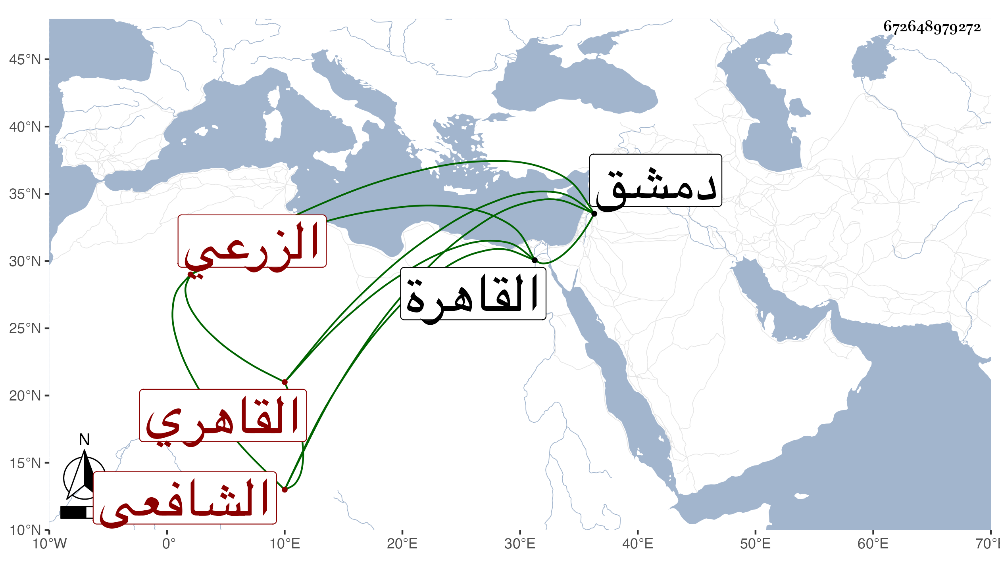

0902Sakhawi.DawLamic.ITO20230111-ara1.EIS1600.672648979272
Biography ID: 672648979272
449
محمد بن أبي بكر بن محمد بن إبراهيم بن محمد المحب القاهري الزرعي الشافعي ويلقب بيضون النغرور . ولد في سنة ثمان وثمانمائة بالقاهرة ونشأ بها وجلس بحانوت الحنابلة المجاور للبيسرية بين القصرين ولازم كتابة الأشعار والنظر في دواوينها فاطلع من ذلك على شيئ كثير بحيث كان يخرج للناس مقاطيع وقصائد فائقة جدا وفيها المرقص والمطرب ويدعيها لنفسه فاغتر به كثير من الجهال وكتب عنه البقاعي في سنة ثمان وثلاثين مبايعة رجزا وبالغ في ذمها وذمه فالله أعلم بسبب ذلك . مات في حدود سنة خمسين أو بعدها بدمشق .
